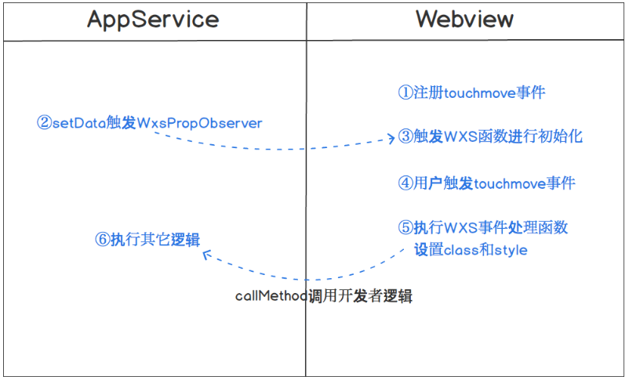

WXS响应事件
基础库 2.4.4 开始支持，低版本需做兼容处理。
背景
有频繁用户交互的效果在小程序上表现是比较卡顿的，例如页面有 2 个元素 A 和 B，用户在 A 上做 touchmove 手势，要求 B 也跟随移动，movable-view 就是一个典型的例子。一次 touchmove 事件的响应过程为：
a、touchmove 事件从视图层（Webview）抛到逻辑层（App Service）
b、逻辑层（App Service）处理 touchmove 事件，再通过 setData 来改变 B 的位置
一次 touchmove 的响应需要经过 2 次的逻辑层和渲染层的通信以及一次渲染，通信的耗时比较大。此外 setData 渲染也会阻塞其它脚本执行，导致了整个用户交互的动画过程会有延迟。
实现方案
本方案基本的思路是减少通信的次数，让事件在视图层（Webview）响应。小程序的框架分为视图层（Webview）和逻辑层（App Service），这样分层的目的是管控，开发者的代码只能运行在逻辑层（App Service），而这个思路就必须要让开发者的代码运行在视图层（Webview），如下图所示的流程：

使用 WXS 函数用来响应小程序事件，目前只能响应内置组件的事件，不支持自定义组件事件。WXS 函数的除了纯逻辑的运算，还可以通过封装好的ComponentDescriptor 实例来访问以及设置组件的 class 和样式，对于交互动画，设置 style 和 class 足够了。WXS 函数的例子如下：
var wxsFunction = function(event, ownerInstance) {
var instance = ownerInstance.selectComponent('.classSelector') // 返回组件的实例
instance.setStyle({
"font-size": "14px" // 支持rpx
})
instance.getDataset()
instance.setClass(className)
// ...
return false // 不往上冒泡，相当于调用了同时调用了stopPropagation和preventDefault
}
其中入参 event 是小程序事件对象基础上多了 event.instance 来表示触发事件的组件的 ComponentDescriptor 实例。ownerInstance 表示的是触发事件的组件所在的组件的 ComponentDescriptor 实例，如果触发事件的组件是在页面内的，ownerInstance 表示的是页面实例。
ComponentDescriptor的定义如下：
方法 参数 描述
selectComponent selector对象 返回组件的 ComponentDescriptor 实例。
selectAllComponents selector对象数组 返回组件的 ComponentDescriptor 实例数组。
setStyle Object/string 设置组件样式，支持rpx。设置的样式优先级比组件 wxml 里面定义的样式高。不能设置最顶层页面的样式。
addClass/removeClass/ hasClass string 设置组件的 class。设置的 class 优先级比组件 wxml 里面定义的 class 高。不能设置最顶层页面的 class。
getDataset 无 返回当前组件/页面的 dataset 对象
callMethod (funcName:string, args:object) 调用当前组件/页面在逻辑层（App Service）定义的函数。funcName表示函数名称，args表示函数的参数。
requestAnimationFrame Function 和原生 requestAnimationFrame 一样。用于设置动画。
getState 无 返回一个object对象，当有局部变量需要存储起来后续使用的时候用这个方法。
triggerEvent (eventName, detail) 和组件的triggerEvent一致。
WXS 运行在视图层（Webview），里面的逻辑毕竟能做的事件比较少，需要有一个机制和逻辑层（App Service）开发者的代码通信，上面的 callMethod 是 WXS 里面调用逻辑层（App Service）开发者的代码的方法，而 WxsPropObserver 是逻辑层（App Service）开发者的代码调用 WXS 逻辑的机制。
使用方法
WXML定义事件：
<wxs module="test" src="./test.wxs"></wxs>
<view change:prop="{{test.propObserver}}" prop="{{propValue}}" bindtouchmove="{{test.touchmove}}" class="movable"></view>
上面的change:prop（属性前面带change:前缀）是在 prop 属性被设置的时候触发 WXS 函数，值必须用{{}}括起来。类似 Component 定义的 properties 里面的 observer 属性，在setData({propValue: newValue})调用之后会触发。
注意：WXS函数必须用{{}}括起来。当 prop 的值被设置 WXS 函数就会触发，而不只是值发生改变，所以在页面初始化的时候会调用一次WxsPropObserver的函数。
WXS文件test.wxs里面定义并导出事件处理函数和属性改变触发的函数：
module.exports = {
touchmove: function(event, instance) {
console.log('log event', JSON.stringify(event))
},
propObserver: function(newValue, oldValue, ownerInstance, instance) {
console.log('prop observer', newValue, oldValue)
}
}
更多示例请查看在开发者工具中预览效果
Tips
目前还不支持原生组件的事件、input和textarea组件的 bindinput 事件
1.02.1901170及以后版本的开发者工具上支持交互动画，最低版本基础库是2.4.4
目前在WXS函数里面仅支持console.log方式打日志定位问题，注意连续的重复日志会被过滤掉。